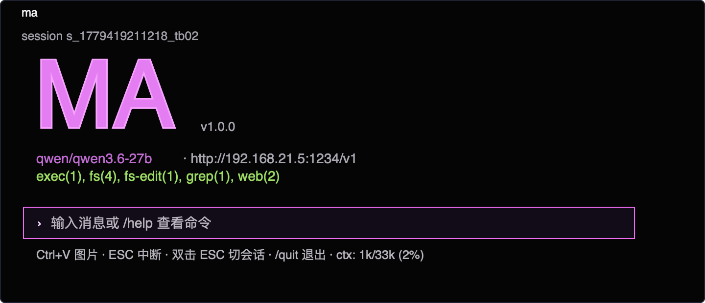
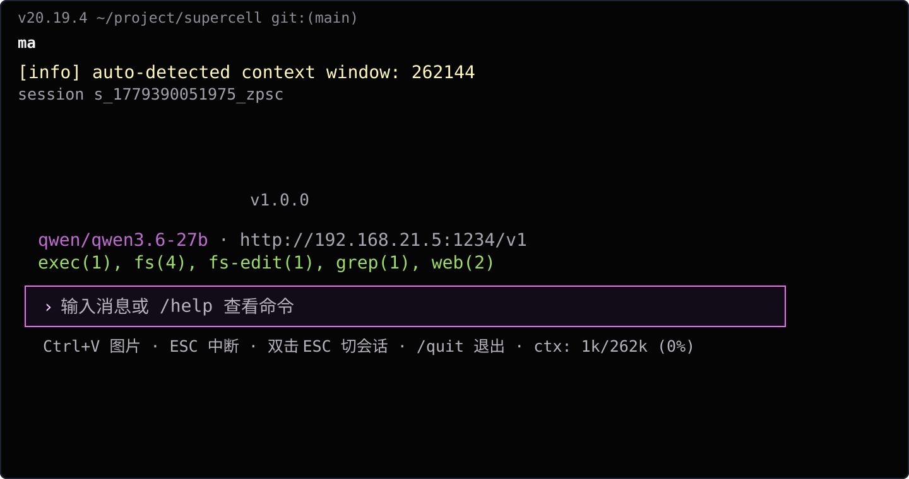
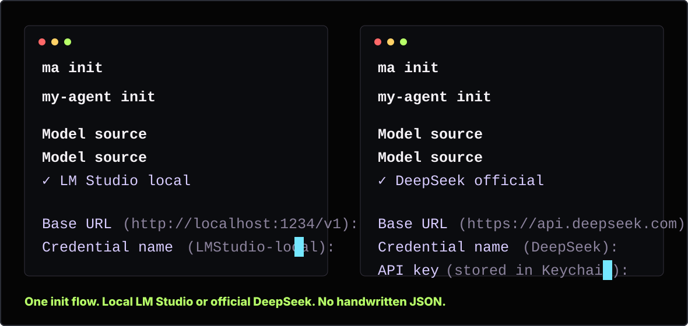

“别让我配置两遍。”
ma init 给 DeepSeek 和 LM Studio 同一套交互路径：发现模型、保存凭据、创建 profile、开始工作。

TUI 就是产品本体

首启体验就是留存
第一屏必须够直接：上下键选择 provider、默认 Base URL、credential name、远程 key 存 Keychain，然后自动发现模型。

用户真正想要什么
ma init 给 DeepSeek 和 LM Studio 同一套交互路径：发现模型、保存凭据、创建 profile、开始工作。
重复仓库任务默认跑本地 LM Studio/Qwen，需要远程能力时再一键切 DeepSeek。
采样参数透传、tool-call 自愈、多模态 payload 兼容、消息完整性测试，都针对 Qwen/LM Studio 做。
自动检测 context window，显示上下文占用，压缩输出，面向长时间 Agent 循环，不是短对话 demo。
远程 key 存 macOS Keychain，配置文件只保存引用，不保存明文密钥。
TUI 显示模型、endpoint、工具、任务进度、thinking 状态、会话控制和 context 预算。
Benchmark 就是证据
这个 benchmark 证明 MA 的小模型工程优化是有效的：本地 Qwen3-30B、LM Studio、工具调用、多轮真实仓库任务、70 题 alpha gate。它不是通用榜单，是产品承诺的证据。
查看 benchmark 细节安装
tar -xzf ma-*.tar.gz
cd ma-*
./ma init
./maExpand-Archive ma-*.zip
cd ma-*
.\ma.cmd init
.\ma.cmd